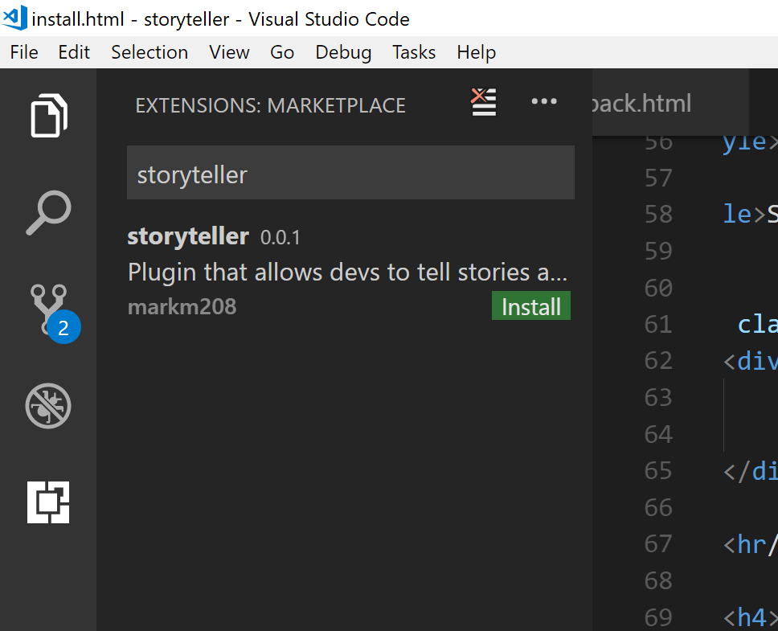

Storyteller currently works as a plugin to the Visual Studio Code editor. This is not the full blown MS IDE, it is a lightweight editor. Make sure you have VS Code installed before going any further.
After VS Code is installed go here to download the extension.
Alternatively from the VS Code Extensions Marketplace tab, type in storyteller in the search bar and the extension will show up.

Tip: Not a VS Code user? More plugins are in the works!